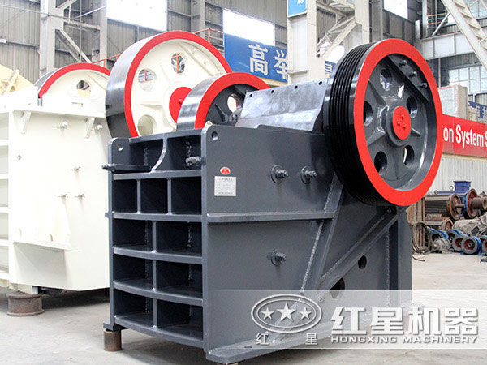

应用范围：砂石料场、矿山开采破碎、煤矿开采破碎、混凝土搅拌站、干粉砂浆、电厂脱硫等
适用物料：河卵石、花岗岩、玄武岩、铁矿石、石灰石、石英石、煤矸石、建筑垃圾等
进料粒度：120-1500mm
生产能力：1-2200t/h
0371-67772626
颚式破碎机介绍
颚式破碎机简称颚破，是出现较早的破碎设备，因其构造简单、坚固、工作可靠、维护和检修容易以及生产和建设费用比较少，因此，直到现在仍然广泛地应用在冶金、化工、建材、电力、交通等工业部门，用于抗压强度在147-245MPa的各种矿石和岩石的粗、中、细碎。为满足冶金、矿山、建筑等工业部门破碎高强度、高硬度需要，红星机器一直投入很多人力、物力、财力用于研发高效节能的新型颚式破碎机，不断有更多新型颚式破碎机推出，欢迎持续关注我厂。
颚式破碎机主要用于对各种矿石与大块物料的中等粒度破碎，广泛应用于矿山、冶炼、建材、公路、铁路、水利和化工等行业。被破碎物料的抗压强度为不超过320MPa。
颚式破碎机图片实拍

颚式破碎机工作原理
颚式破碎机工作方式为曲动挤压型，工作原理是：电动机驱动皮带和皮带轮，通过偏心轴使动颚上下运动，当动颚上升时，肘板与动颚间夹角变大，从而推动动颚板向固定颚板接近，与次同时，物料被压碎或劈碎，达到破碎的目的；当动颚下行时，肘板与动颚夹角变小，动颚板在拉杆、弹簧的作用下，离开固定颚板，此时已破碎物料从破碎腔下口排出。随着电动机连续转动而破碎机动颚作周期运动压碎和排泄物料，实现批量生产。
颚式破碎机性能特点
-
01 制造工艺先进
红星颚破均采用世界先进制造工艺，选用高端的制作材料 打造而成；且采用有限元分析技术，设备具有更高的工作 强度，有助于生产效率的提升。
-
02 轴承长久耐用
颚式破碎机轴承座采用整体式铸钢结构，能够保证与破碎 机架完全匹配，同时也大大增强了轴承座的径向强度，较 其他同规格破碎机，其偏心轴轴承更大更耐用，更高的承 载能力和有效的密封轴承使寿命大大延长。
-
03 动颚质量可靠
红星鄂式破碎机拥有更先进的动颚总成，使其更经久耐 用，动颚总成采用高质量的铸钢件构成，并通过两个大 型铸钢飞轮传动，此外重型偏心轴亦采用锻坯进行加工， 这一切均使得颚式破碎机具有超凡的可靠性。
-
04 排料调整方便
鄂式破碎机的破碎腔采用对称“V”形结构，使实际进料 口宽度与名义进料口宽度相一致，更利于快捷方便的调整 排料口，其中设备还装有楔块排料口调整装置，该装置比 老式的垫片调整更简单、安全和快捷。
颚式破碎机价格
客户在购买颚式破碎机的时候，除了关注颚式破碎机本身的性能及质量之外，颚式破碎机价格无疑是客户比较关注的，尤其是对于颚式破碎机这种生产厂家较多的设备来说，更加要谨慎购买，毕竟一台颚式破碎机的价格不便宜。颚式破碎机的价格是受多种因素影响的，如设备的厂家、规格、质量、地区、市场需求量等等，不同的颚式破碎机厂家，产品的性能及质量不同，价格也存在差异，因此，客户在购买颚式破碎机时，一定要在正规的厂家购买，具体的价格可以咨询具体的生产厂家（红星颚式破碎机价格咨询热线：0371-67772626）。
河南鄂式破碎机厂家地址：河南郑州高新区檀香路8号。
鄂式破碎机价格咨询电话：0371-67772626。
专家咨询
-
张宏恩老师 | 红星技术工程师答 您好，我公司生产的PE-1600×2100颚式破碎机最高产量可达2200t/h，该设备可24小时连续运转，完全可以满足贵公司的生产需求。感谢您对红星机器的支持和信任！
-
张宏恩老师 | 红星技术工程师答 您好，我公司生产的PE-1600×2100颚式破碎机最高产量可达2200t/h，该设备可24小时连续运转，完全可以满足贵公司的生产需求。感谢您对红星机器的支持和信任！
-
张宏恩老师 | 红星技术工程师答 您好，我公司生产的PE-1600×2100颚式破碎机最高产量可达2200t/h，该设备可24小时连续运转，完全可以满足贵公司的生产需求。感谢您对红星机器的支持和信任！